Projekt realizowany na Politechnice Śląskiej w współpracy z firmą IPG Photonics w celu określenia wpływu parametrów procesu mikro-spawania laserowego złączy rur cienkościennych za pomocą automatycznego urządzenia IPG Multi Axis Compact z laserem światłowodowym.
Identyfikacja niezgodności produkcyjnych z zastosowaniem autoenkodera oraz wykorzystanie AI (Machine Learning) w Pythonie do identyfikacji odpowiedniego obiektu oraz rozpoznawania niezgodności. Opracowano programy i porównano różne modele AI (YOLOv8, ResNet-18, ResNet-50) w celu uzyskania najlepszego wyniku identyfikacji obiektu do dalszego automatycznego zastosowania w procesie produkcyjnym.
Kierunek: Automatyka i Robotyka
Szanowni Państwo,
Jestem absolwentem kierunku Automatyka i Robotyka. Uczestnicząc w projektach z zakresu automatycznego spawania laserowego oraz weryfikacji poprawności klasyfikacji obiektu przy użyciu algorytmów Machine Learning w Pythonie (autoenkoder, YOLOv8, ResNet-18, ResNet-50), rozwinąłem umiejętności pracy w zespole, dotrzymywania terminów oraz dokładności w realizacji zadań. Ponadto zdobyłem praktyczną wiedzę z zakresu programowania ścieżek spawania (G-CODE), obsługi przyrządów pomiarowych, a z zakresu ML budowania oraz trenowania modeli, implementacji detekcji obiektów, walidacji modeli, przetwarzania obrazów w celu rozpoznawania obiektów w czasie rzeczywistym.
Moje podstawy teoretyczne oraz praktyczne pozwolą mi szybko wdrożyć się do współpracy nad nowymi projektami i zrozumieć kluczowe wyzwania i efektywnie je rozwiązywać.
Samodzielne opracowywanie i porównywanie modeli AI do wykrywania niezgodności oraz optymalizacji procesów umożliwiło mi zapoznanie się z różnorodnością architektur i ich specyfikacją, a przede wszystkim nauczyło samodzielności w wykonywanych zadaniach oraz kreatywnego podejścia do rowiązywania problemów.
Moja motywacja do ciągłego samokształcenia w obszarze programowania i nowych technologii gwarantuje, że nieustannie będę poszerzał kompetencje niezbędne na stanowisku, na które aplikuję.
Z poważaniem,
Konrad Śliwiński
(Projekty dostępne na moim Githubie)
Wykorzystałem autoenkoder do poprawy jakości zdjęć, które następnie zostaną wykorzystane klasyfikacji oraz rozpoznawania zdjęć.
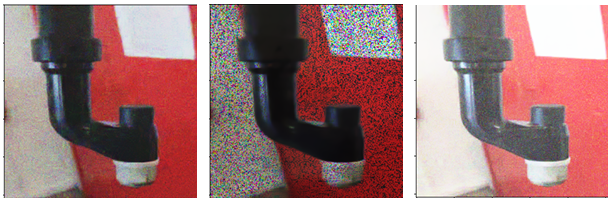
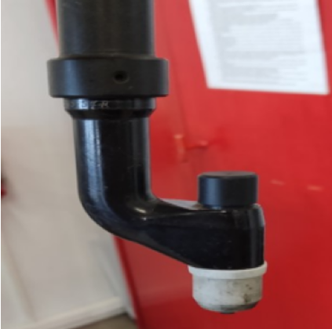
Jest to model najbardziej przystosowany do klasyfikacji zdjęć, jak każdy z modeli musi on odpowiedni układ folderów ze zdjęciami do nauki.
Modele RESNET są złożone z 2 kodów, pierwszy służy do wytrenowania modelu i zapisuję jako plik, drugi służy do odczytu zapisanego wcześniej pliku z wytrenowanym modelem dla odpowiedniej ilości klas, sprawdzenie wszystkich 50 zdjęć przygotowanych do klasyfikacji i zliczenie dla ilu zdjęć dana klasa została przewidziana.
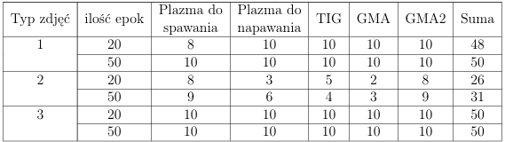
Model ResNet posiadający 50 warstw jest tożsamy z modelem ResNet18
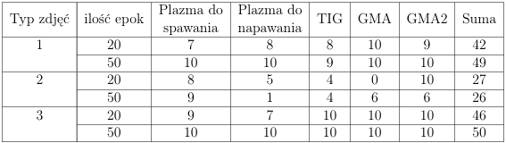
YOLOv8 wyróżnia się zarówno najwyższą szybkością działania, jak i prostotą obsługi spośród wszystkich modeli, które wykorzystałem, co czyni go najbardziej przyjaznym dla użytkownika.
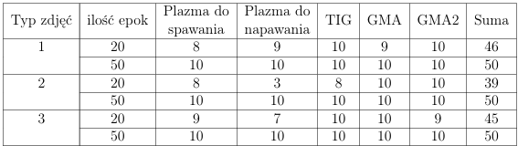
Jednocześnie model YOLOv8 umożliwia w prosty sposób tworzyć wykresy takie jak np. strat podczas treningu czy też dokładności walidacji w trakcie procesu szkolenia
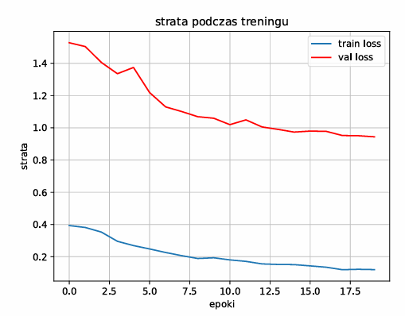
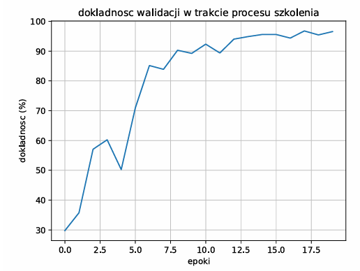
(Mogą nie znajdować się jeszcze na GitHubie)
Prosta gra stworzona w celu zaznajomienia z Pythonem.
Zasada gry polega na tym, że jedna flaga ucieka, druga ją goni, a złapanie kończy grę i pokazuje czas trwania ucieczki - wybór flag będących obiektem, który ucieka oraz goni jest przypadkowa.
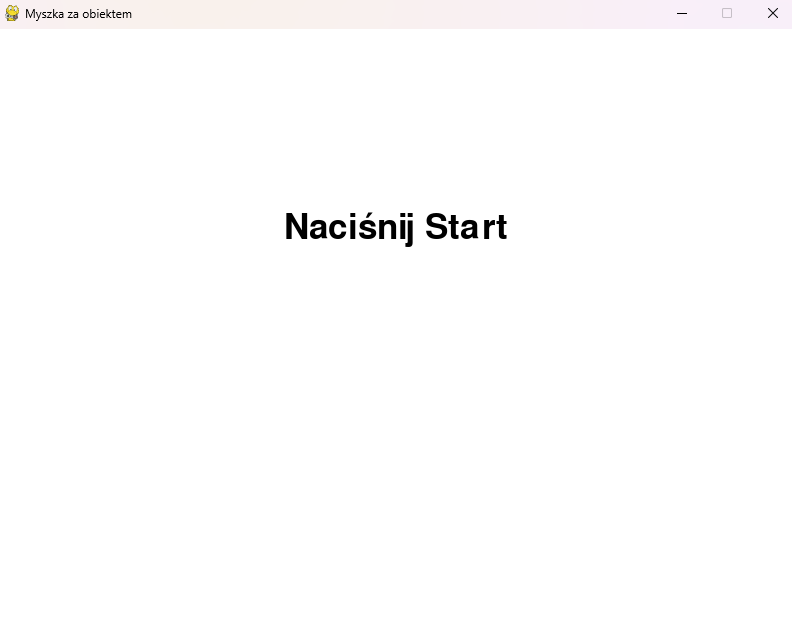
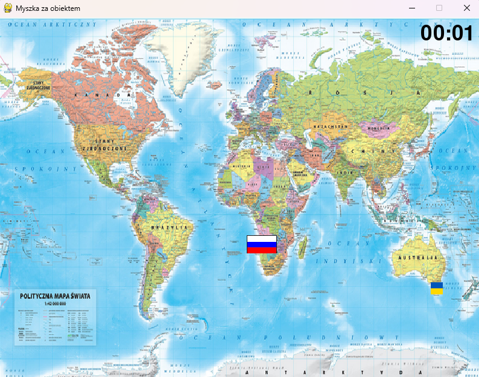
Stworzyłem program do automatycznego wykonywania zrzutów ekranu, która stanowi fundament dla rozwoju kolejnych rozwiązań opartych na analizie obrazów.
Ten program posłużył mi jako główny element utworzenia bazy danych postaci jednej z gier, która miała być elementem szukanym przez program w zakładce Wykrywanie obiektu.
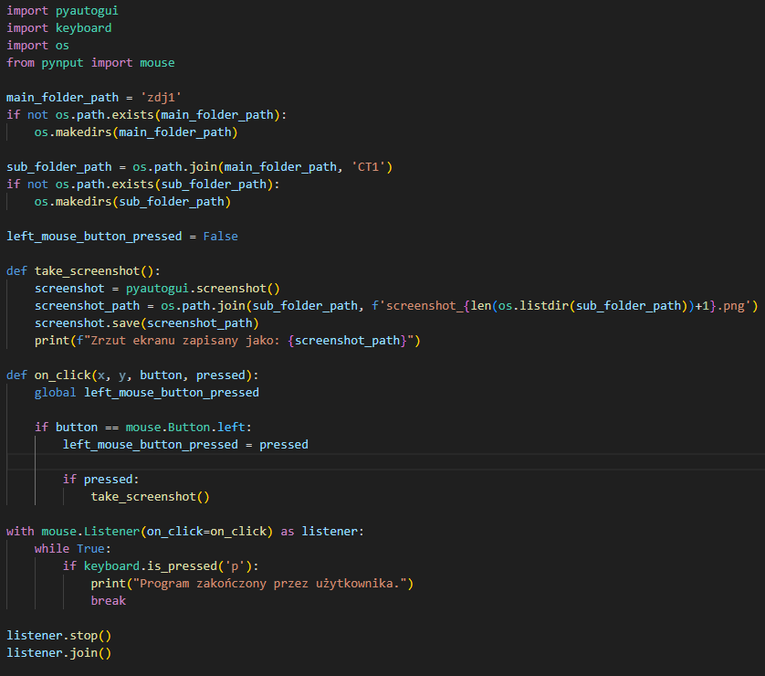
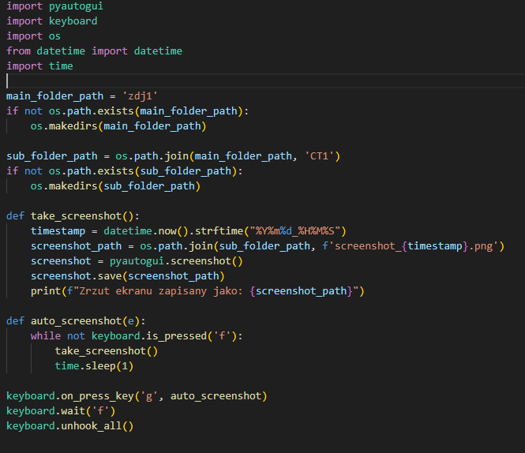
Projekt ma na celu wykrywanie postaci w grze z wykorzystaniem modelu detekcji obiektów. Obecnie znajduje się na etapie dalszej optymalizacji. W kolejnych etapach planowane jest rozszerzenie funkcjonalności o automatyczne śledzenie wykrytego obiektu za pomocą ruchu kursora myszy.
Model trenowano na zbiorze około 150 obrazów. Choć liczba danych nie pozwala jeszcze na pełną skuteczność detekcji, uzyskane rezultaty są satysfakcjonujące i potwierdzają poprawność przyjętej koncepcji, co przedstawia załączone nagranie:
Pobierz nagranie (MP4)Projekt stanowi rozwinięcie systemu detekcji obiektów poprzez implementację mechanizmu automatycznego przemieszczania kursora w kierunku wykrytego celu. Testy przeprowadzono w środowisku treningowym (Aim Lab), gdzie obiekty mają jednolity wygląd, lecz różnią się rozmiarem.
W celu zwiększenia stabilności działania wprowadzono ograniczenie obszaru aktywnej detekcji do określonej odległości od aktualnej pozycji kursora. Po spełnieniu warunku odległościowego kursor przemieszcza się w wyznaczone współrzędne celu.
Program działa na podstawie analizy obrazu z udostępnionego ekranu. Ze względu na wysoką dynamikę obiektów system nie zawsze nadąża z pełną precyzją pozycjonowania, aczkolwiek precyzyjność będzie dalszym celem mojego projektu.
W porównaniu do poprzedniego projektu zwiększenie zbiotu treningowego do około 600obrazów oraz jednolity obiekt zapewniły wysoką skuteczność detekcji.
W_trakcie
Sprawdzanie z wykorzystaniem kamer czy:
Zliczanie wykorzystując kamery: